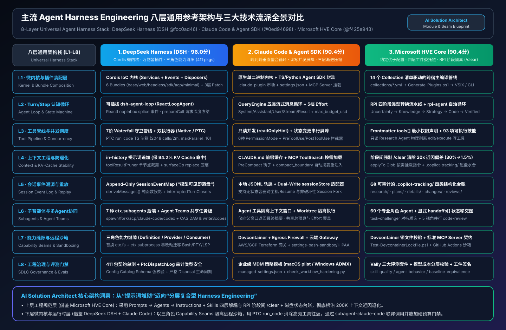
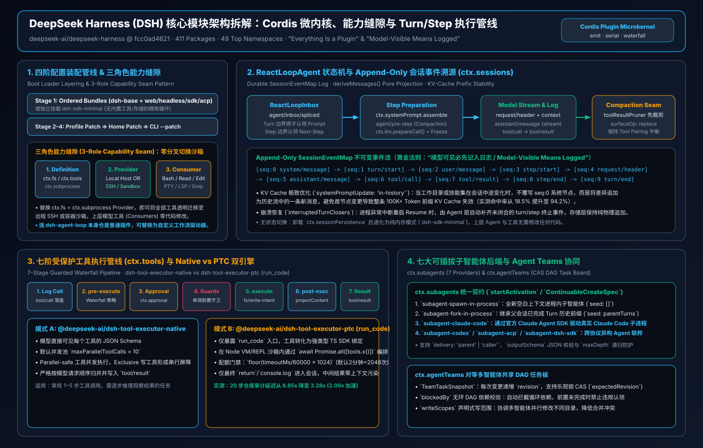
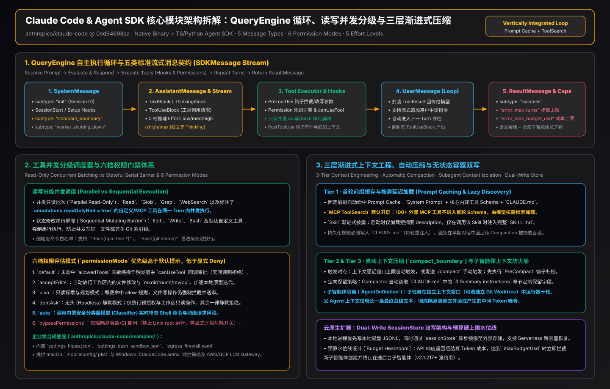
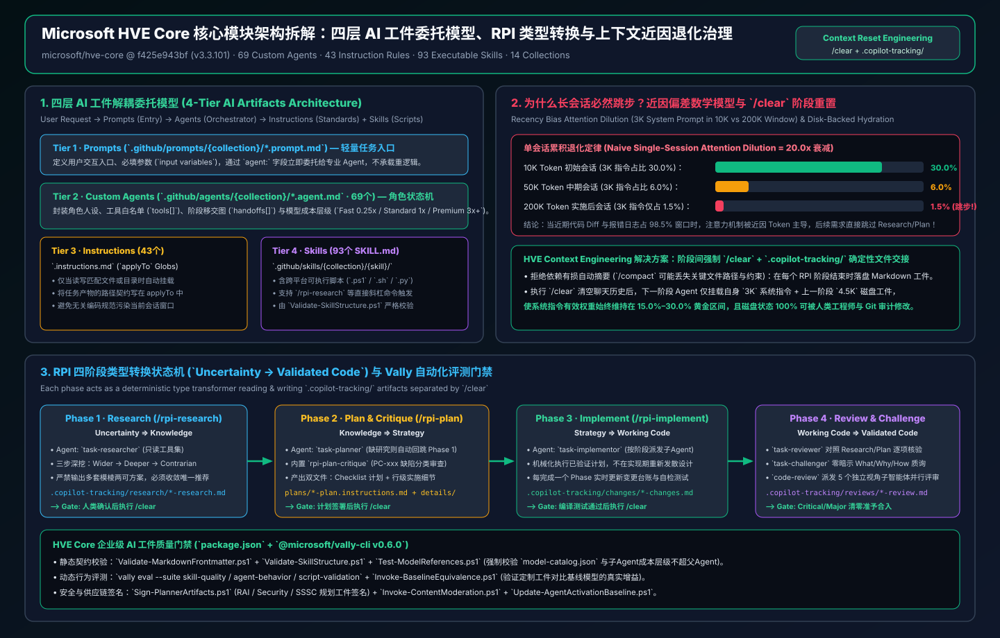

8-Layer Universal Harness Stack (Select a layer to inspect 3-framework implementation contracts)
Click any layer (L1–L8) to inspect DeepSeek DSH, Claude Code, and Microsoft HVE-Core implementation mechanisms.
Core Architecture Blueprints (4 Vector SVG Diagrams)
Select top-right links to open full-screen vector SVGs
Fig 1 · 8-Layer Universal Harness Stack & Three-School Comparison
Open SVG ↗

Fig 2 · DeepSeek Harness (DSH) Cordis Microkernel & Capability Seams
Open SVG ↗

图 3 · Claude Code & Agent SDK 循环, 并发屏障与三层压缩
Open SVG ↗

Fig 4 · Microsoft HVE Core 4-Tier Artifact Delegation & RPI Phase Isolation
Open SVG ↗

Tool Execution Pipeline & Turn/Step State-Machine Simulator (Serial vs. Native Parallel+Barrier vs. DSH PTC `run_code`)
模拟真实工具批次在三种执行模式下的端到端延迟, 模型往返步数 (Model Steps), 中间 Token 污染量，以及 DeepSeek DSH PTC 配额门禁公式
floor(timeoutMs / 60000 × maxSubCallsPerMinute)。
上下文工程, 近因偏差 (Recency Bias) and KV-Cache 前缀命中率计算器
基于 Microsoft HVE Core (`docs/rpi/context-engineering.md`) and DeepSeek DSH (`systemPromptUpdate: 'in-history'`) 数学模型，实时计算指令注意力权重稀释倍数, 跳步风险与 KV Cache 成本节省。
DeepSeek DSH · 7-Provider Federation + CAS Task Board
packages/subagent/* & packages/team/*
DSH decouples the `ctx.subagents` delegation contract from underlying execution runtimes across 7 pluggable providers and coordinates peer Agent Teams via an acyclic CAS DAG task board:
// 1. Continuable Subagent Delegation Contract
const run = await ctx.subagents.startActivation({
provider: 'claude-code', // or spawn-in-process | fork-in-process | acp | codex | dsh-sdk
delivery: 'parent', // 'parent' | 'caller'
seed: parentCompletedTurns,
outputSchema: ReviewResultSchema,
maxDepth: 3,
});
// 2. Agent Teams CAS Optimistic-Lock Task Claim
await ctx.agentTeams.updateTask({
taskId: 'auth-migration',
expectedRevision: 4, // CAS conflict check
blockedBy: ['schema-audit'],
writeScopes: ['src/auth/**']
});
Claude Code · Context Firewall + Shared Hard Budget
AgentDefinition & max_budget_usd (v2.1.217+)
Claude Code subagents run heavy search and test workloads inside isolated context windows (and optional Git worktrees), returning a concise summary while sharing a hard USD ceiling with the parent session:
for await (const msg of query({
prompt: "Refactor auth and verify tests",
options: {
maxBudgetUsd: 2.50, // Cumulative hard cap across parent + all subagents
maxTurns: 12,
effort: "high",
permissionMode: "acceptEdits",
agents: {
"code-explorer": {
description: "Fast read-only repo scanner",
tools: ["Read", "Grep", "Glob"],
effort: "low" // Per-subagent lower reasoning effort override
}
}
}
})) { /* handle System / Assistant / Result */ }
Microsoft HVE · Explicit Handoffs + Adversarial Red-Teaming
.github/agents/hve-core/*.agent.md
HVE Core 通过 YAML Frontmatter 的 tools[] and handoffs[] 静态约束每个阶段角色的能力边界，并强制子智能体模型成本层级不超越父会话：
---
name: task-planner
description: Creates 2 planning files (plan, details)
model:
- Claude Sonnet 4.6 (copilot)
- GPT-5.4 (copilot)
tools: ['read', 'search', 'edit'] # Mutating implementation tools disabled
handoffs:
- label: Hand off to Task Implementor
agent: task-implementor
prompt: /rpi-implement
- label: Run Plan Critique
agent: rpi-plan-critique
---
# Enforces .copilot-tracking/research/ prerequisite
AI Solution Architect · 12-Scenario Enterprise Selection Scorecard & Hybrid Blueprint
All 12 enterprise scenarios passed forward/reversed option-order robustness checks (0.0 pts drift), covering 11 production architecture patterns and 1 explicit anti-pattern block (S11 ✕).
| ID | Enterprise Scenario | Core Architectural Challenge | Recommended Harness Pattern & Components | Confidence / Drift | Gate Action |
|---|